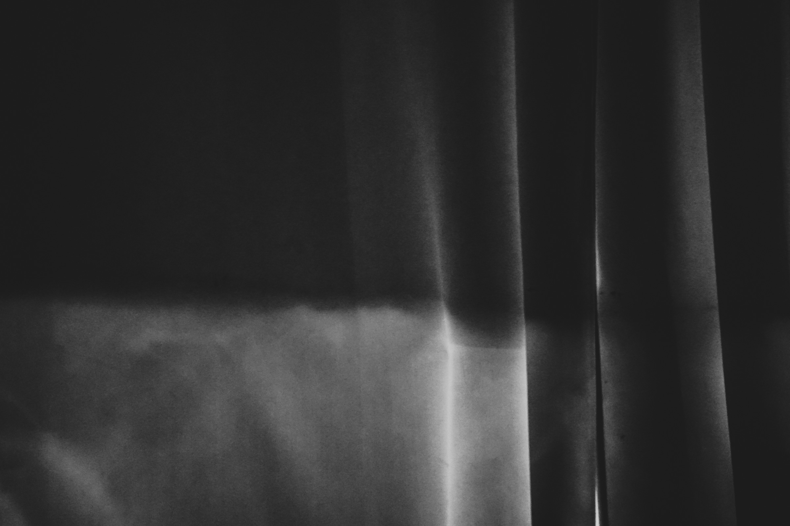

Qili Xu
About
Qili Xu’s artistic practice spans photography and moving image. Drawing on personal experiences and everyday observations, she explores the lived experience of modernity, with a particular interest in processes of transformation and critical thresholds. Her work examines how speed, order, and instability shape our perception of the contemporary world. Through repetition, juxtaposition, and the manipulation of spatial and temporal relationships, she attempts to investigate the tensions between continuity and disruption, movement and stillness.
© 2026 Qili Xu. All rights reserved.